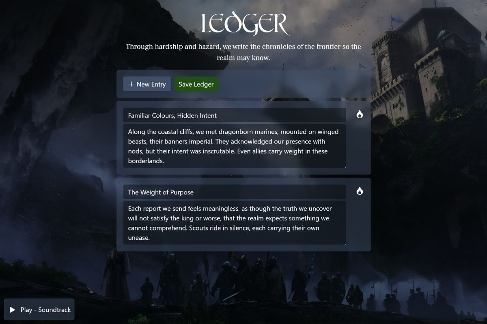

Building a Fantasy Ledger With Java Spring Boot
I’ve been wanting to put together a beginner-friendly Java Spring Boot tutorial that takes you through everything starting from installing Java, to understanding the core principles of databases, CRUD operations and MVC while keeping it fun. But I didn’t want to fall into the trap of making yet another todo app.
Since I’m a huge fan of fantasy media 🧝♂️ and books like A Song of Ice and Fire and The Lord of the Rings, I decided to build a fantasy-themed ledger web app. In it, users can create mini log entries that persist through a backend database. The fantasy theme also gives us room to get creative with CSS and styling!
Note: This tutorial assumes you have a basic understanding of the Java programming language syntax as well as OOP.
Getting Started
To follow along, you’ll need to have a couple of things installed first:
- The Long-Term Support (LTS) version of the JDK (Java Development Kit). At the time of writing, this is JDK 21.
- An IDE of your choice. I’ll be using VS Code, but JetBrains IDEs (like IntelliJ) or something similar will work just as well.
If you decide to go with VS Code, make sure you install these extension packs to make your life easier:
- Language Support for Java™ by Red Hat
- Extension Pack for Java by Microsoft
- Spring Boot Extension Pack by VMware
Creating a Spring Boot Project
Before we dive in, a quick note: the full source code for this project is available here. To create a new Spring Boot project, you can either go to start.spring.io or, even better, use Spring Initializr directly from your IDE. In VS Code, open the command palette (Ctrl+Shift+P) and select: Spring Initializr: Generate a Maven/Gradle Project.
Both Maven and Gradle are build automation tools that handle dependencies and the build process for us. For this tutorial, I’ll be sticking with Maven.
Once your project is generated, the next step is to update the pom.xml file to include a few additional dependencies: JDBC and H2 for database persistence, and Thymeleaf so we can render HTML templates.
1<dependencies>
2 <dependency>
3 <groupId>org.springframework.boot</groupId>
4 <artifactId>spring-boot-starter-web</artifactId>
5 </dependency>
6 <dependency>
7 <groupId>org.springframework.boot</groupId>
8 <artifactId>spring-boot-devtools</artifactId>
9 <scope>runtime</scope>
10 <optional>true</optional>
11 </dependency>
12 <dependency>
13 <groupId>org.springframework.boot</groupId>
14 <artifactId>spring-boot-starter-test</artifactId>
15 <scope>test</scope>
16 </dependency>
17 <dependency>
18 <groupId>org.springframework.boot</groupId>
19 <artifactId>spring-boot-starter-jdbc</artifactId>
20 </dependency>
21 <dependency>
22 <groupId>com.h2database</groupId>
23 <artifactId>h2</artifactId>
24 <scope>runtime</scope>
25 </dependency>
26 <dependency>
27 <groupId>org.springframework.boot</groupId>
28 <artifactId>spring-boot-starter-thymeleaf</artifactId>
29 </dependency>
30</dependencies>
Dependencies needed for the project
Model–View–Controller
When writing applications in Java Springboot, we use a software architectural pattern called MVC which is made of three distinct elements:
- The model, the internal representations of information
- The view, the interface that presents information to and accepts it from the user
- The controller, the software linking the two
Let’s start with the view. Create a new folder called templates and add an index.html file inside it. Next, create a controller in the controllers folder to serve that template. Once that’s set up, start the development server with: ./mvnw spring-boot:run.
You can grab the starter code from GitHub if you’d like, or push yourself to build the frontend using a framework you haven’t tried before like Svelte or React. I personally built the UI with Vue 3, splitting key sections into Thymeleaf fragments, and styling it with some fantasy-inspired medieval fonts ⚔️ I found online. I won’t dwell too much on the frontend since it’s fairly straightforward, but my favorite touches are the music playback feature and the CSS glass effect (thanks to CSS Tricks).
Setting up the Controller & Database
For data persistence, we’ll be using H2, a lightweight relational database management system. In this tutorial, I’ll stick with an in-memory database, though you can easily configure it to run on disk if you prefer.
You’ll just need to update the database settings in your application.properties. For an in-memory setup, it should look something like this:
1spring.application.name=fantasy-ledger
2server.port=3007
3
4# H2 memory db setup
5spring.datasource.url=jdbc:h2:mem:testdb
6spring.datasource.driverClassName=org.h2.Driver
7spring.datasource.username=sa
8spring.datasource.password=
9spring.h2.console.enabled=true
So, to recap: we now have a frontend view and a database set up, but nothing yet to connect the two. This is where our controller comes in. Create a new controller with four routes GET, PATCH, POST and DELETE matching the ones used in your frontend. Your code should look something like this.
1public class CrudController {
2 @Autowired
3 private JdbcTemplate db;
4
5 @GetMapping("/entries")
6 public List<Map<String, Object>> getEntries() {
7 return db.queryForList("SELECT id as \"id\", title as \"title\", description as \"description\" FROM entries");
8 }
9
10 @DeleteMapping("/entries/{id}")
11 public List<Map<String, Object>> deleteEntries(@PathVariable long id) {
12 db.update("DELETE FROM entries WHERE id = ?", id);
13 return db.queryForList("SELECT id as \"id\", title as \"title\", description as \"description\" FROM entries");
14 }
15
16 @PostMapping("/entries")
17 public Map<String,String> createEntry(@RequestBody Entry entry) {
18 db.update("INSERT INTO entries(id, title, description) VALUES(?, ?, ?)", entry.getId(), entry.getTitle(), entry.getDescription());
19 return Map.of("status", "success");
20 }
21
22 @PatchMapping("/entries")
23 public Map<String,String> updateEntry(@RequestBody Entry entry) {
24 db.update("UPDATE entries SET title = ?, description = ? WHERE id = ?", entry.getTitle(), entry.getDescription(), entry.getId());
25 return Map.of("status", "success");
26 }
27}
I’ve also added an Entry class (a DTO, or Data Transfer Object), which defines the data models being passed around. For simple return objects, it’s often best to use a Map, but for more complex data structures, you’ll want to use POJO classes. On top of that, I used the @PostConstruct annotation to handle some initial database setup before the application launches, including creating a table for our entries and populating it with some sample data.
Final Result
 The final result!
And there we have it, a fully functional, fantasy-themed CRUD application 🔥 built with Java Spring Boot. The complete source code is available on GitHub, but I’d recommend going beyond just reading it: experiment, break things, fix them and push yourself to add new features. That’s the best way to really level up your skills.
In the next post, we’ll take things a step further by dockerising the application and deploying it to the cloud.
Thanks for following along!
#Java #Springboot #Crud #Mvc #Backend #Frontend #Tutorial #Github